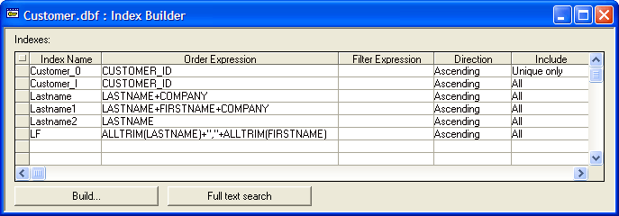

Using an Index to Find a Record
The following script is provides a simple example of how to use an index to determine whether a record exists, and to act accordingly. To start, we create an index based on lastname and firstname named "LF". The Order Expression for the index is alltrim(lastname) + "," + alltrim(firstname).

After opening the Customer table, the script uses <TBL>.INDEX_PRIMARY_PUT() to set "LF" as the current index.
The script then displays an Xdialog that asks for firstname, lastname, and phone number. It composes a key based on firstname and lastname and uses <TBL>.FETCH_FIND() to find the first matching record.
If that record does not exist, as indicated by a negative recnum, the script uses <TBL>.ENTER_BEGIN() to add a new record. If the record does exist, the script uses <TBL>.FETCH_GOTO() to move to and then <TBL>.CHANGE_BEGIN() to modify the phone number field in the record.
Examples
|
dim tbl as P dim shared fname as C dim shared lname as C dim shared phone as C dim shared varC_result as C dim shared recnum as N dim thiskey as C ' open the Customer table tbl = table.open("customer",file_rw_exclusive) ' select LF as the current index tbl.index_primary_put("LF") ok_button_label = "&OK" cancel_button_label = "&Cancel" ' ask for user input varC_result = ui_dlg_box("Enter Name",<<%dlg% {region} First name:| [.40fname]; Last name:| [.40lname]; Phone number:| [.40phone]; {endregion}; {line=1,0}; {region} <*15=ok_button_label!OK> <15=cancel_button_label!CANCEL> {endregion}; %dlg%, <<%code% ' respond to the OK button if (a_dlg_button = "OK") then thiskey = alltrim(lname) + "," + alltrim(fname) recnum = tbl.fetch_find(thiskey) if (recnum > 0) then ' the record exists tbl.fetch_goto(recnum) tbl.change_begin() tbl.phone = phone tbl.change_end(.t.) else ' the record does not exist tbl.enter_begin() tbl.firstname = fname tbl.lastname = lname tbl.phone = phone tbl.enter_end(.t.) end if end if %code%) tbl.close() |
See Also